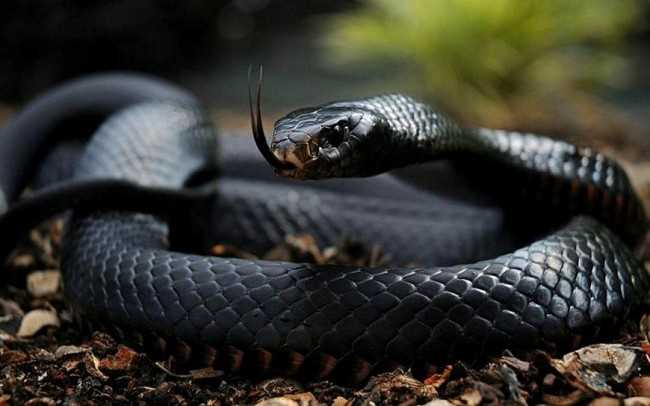

Víboras
Culebras
Venenosas
No Venenosas
Serpientes
Las Serpientes (Serpentes) o también conocidas como ofidios (ophidia), son un suborden de saurópsidos (reptiles) diápsidos pertenecientes al orden Squamata.
A su vez el suborden de serpientes se subdivide en dos infraórdenes y 25 familias repartidas por todo el planeta, dos de ellas son las Viperidae (de aquí viene la palabra “víbora”) y Colubridae (de aquí viene la palabra "culebra").
Dependiendo de la región se utiliza como sinónimo dichas palabras para referirse a las serpientes en general indistintamente de que pertenezcan a otra familia.